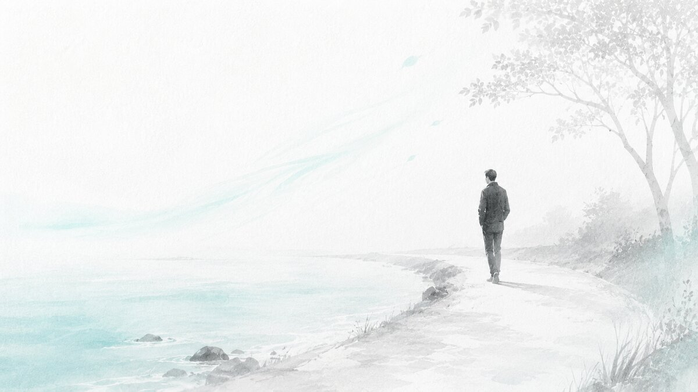
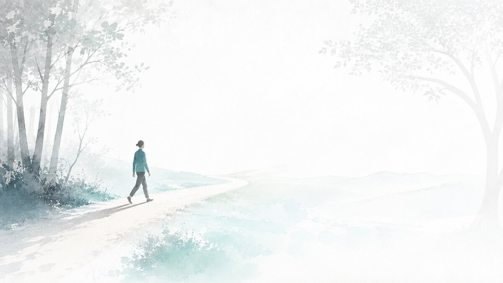

Before you can create a useful Big Dream, you need to see what you are no longer willing to drift towards.
Your Big Dread is not there to shame you.
It is there to help you tell the truth.
A Big Dread is the future you might be drifting towards if nothing meaningful changes.
It may come from avoidance, obligation, guilt, people-pleasing, overworking, distraction, fear, comfort, resentment or simply living on autopilot.
This guide helps you name the drift. Once you can name the future you do not want, it becomes easier to create a future that is worth moving towards.
Your answers are saved on your device as you go. You can leave and come back.

Pieter and Marietjie are fictional example participants. Their examples are included only to help you if you feel stuck. You do not need to copy their style or answers. Use them only as a guide, then return to your own life and write what is true for you.
Pieter is 46. He runs a small business. He is responsible, capable and tired. He has built a life that works on paper, but he feels like he is slowly becoming emotionally absent, reactive and stuck in survival mode.
Marietjie is 39. She is a teacher and mother of two. She loves her family, but she feels she has disappeared into everyone else's needs. She wants a future with more honesty, energy, creative expression and personal direction.
This guide uses three practical methods.
You notice which areas of life feel misaligned, neglected or costly.
You slow down and write honestly so hidden patterns become visible.
Do not try to sound wise.
Do not try to impress anyone.
Write what is true.
Write freely for five minutes.
Do not edit.
Do not censor.
Do not try to solve anything yet.
If I continue like this, I am afraid I will be financially stable but emotionally empty. I will keep running the business, but with less joy and more pressure. My wife and children will know me as someone who provides, but not as someone who is really present. I will become more irritated, more tired and more difficult to reach.
If I continue like this, I am afraid I will keep putting everyone else first and slowly lose touch with what I want. I will be useful to many people, but not very alive in myself. I will become resentful and then feel guilty for being resentful. I am afraid I will wake up in a few years and realise I never chose my own life.
Score each area from 1 to 10.
1 means neglected, draining or misaligned.
10 means alive, aligned and meaningful.
Do not overthink the number. Your first honest instinct is usually enough.
Reflect on your insights.
Don't judge yourself, just observe and understand.
The area costing me the most is my health and inner life. I am always tired and always in my head.
The area I have been pretending is fine is my marriage. We function, but we do not really connect.
The pattern I am tired of repeating is saying yes to every problem in the business and then having nothing left at home.
The area costing me the most is fun, adventure and aliveness.
The area I have been pretending is fine is my own personal growth. I keep telling myself it is not the season for me.
The pattern I am tired of repeating is being available to everyone and then feeling invisible.
Use the tick boxes to look around and then...
Complete the sentences below honestly.
Do not make them dramatic. Make them clear.
My Big Dread is that if nothing meaningful changes, I may slowly become someone who is respected for what he provides but barely known by the people closest to him. I may keep building a business while losing my health, my humour, my presence and my ability to enjoy the life I am supposedly working so hard to create.
My Big Dread is that if nothing meaningful changes, I may slowly become someone who is loved because she is useful, but unknown in what she actually wants. I may keep being dependable while feeling unseen, resentful and privately disappointed in the life I never gave myself permission to choose.
Now reduce the paragraph into one clear sentence.
My Big Dread is becoming a tired provider who loses his health, presence and joy while maintaining a life that looks successful from the outside.
My Big Dread is becoming a useful, dependable person who slowly loses her own voice, creativity and sense of aliveness.
Read your Big Dread sentence slowly, to yourself. Then ask:
If yes, keep it. If not, rewrite it using simpler words.
Your Big Dread does not need to be dramatic. It needs to be true.
Naming the future you do not want is a brave start.
Much love,
Francois
Your reflection is saved on this device. No one else can see it.